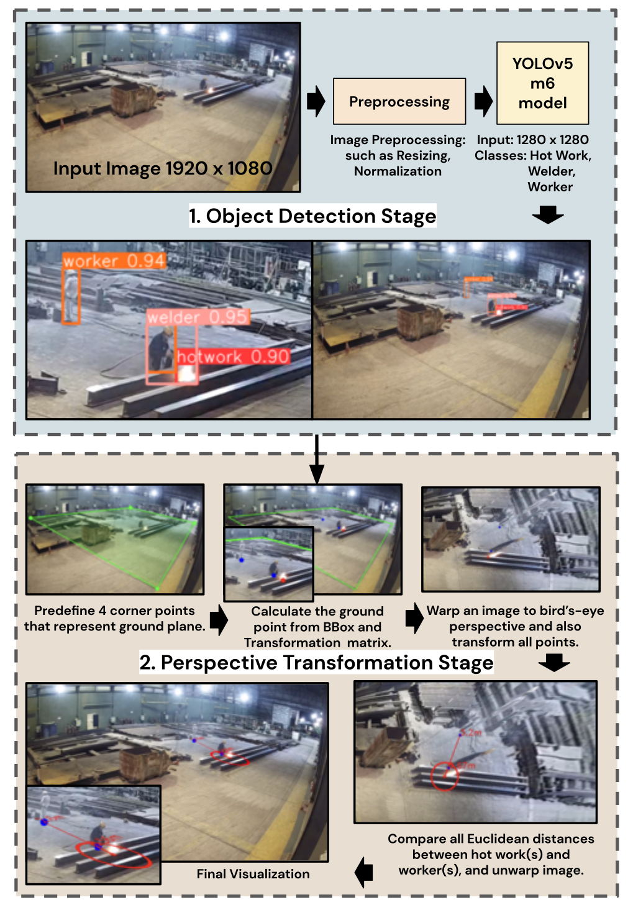

|
I'm currently studying Artificial Intelligence MSc at the University of Surrey, where I've been working on the thesis related to SketchX research under the supervision of Pinaki Chowdhury and Professor Yi-Zhe Song. I'm also a machine learning engineer at AI and Robotics Ventures (ARV), subsidiary of PTTEP. At ARV, I've worked on computer vision projects in several areas, including autonomous offshore mission, safety control measures, etc. My other key responsibilities are project management, MLOps pipeline implementation and model optimization for resource-constrained platforms. |
{kind=link}
News / Talks
- July 2023: My team, Fallen Angels, won 2nd place on ARV Anti-drone Hack Hunter 2023
- June 2023: The International Excellence Postgraduate scholarship @ University of Surrey
- March 2023: Guest Speaker on Generative AI @ NVIDIA GTC 2023
- November 2022: IBM Quantum Challenge Fall 2022 Achievement - Foundation
- July 2022: External Technical Committee @ RoboCup 2022
- November 2021: Machine Learning Guest Lecturer @ NIDA Thailand
{kind=link}
Research
|  |
Pakcheera Choppradit, Chaitat Utintu, Kasisdis Mahakijdechachai, Vasin Suttichaya, Teepakorn Tosawadi, Ek Thamwiwatthana ICIEA, 2023 This method aims to monitor hot work activity and implement the risk assessment policy, which could control by the hazard area control. Our papar was the first work which applied the combination of object detection and perspective transformation with the actual hot work control measures. |
|
Visarut Trairattanapa, Sasin Phimsiri, Chaitat Utintu, Riu Cherdchusakulcha, Teepakorn Tosawadi, Ek Thamwiwatthana, Suchat Tungjitnob, Peemapol Tangamonsiri, Aphisit Takutruea, Apirat Khiewmeesuan, Tanapoom Jitnaknan, Vasin Suttichaya iSAI-NLP, 2022 The methods for reading multiple analog gauges automatically using a camera. The processing pipeline consists of two main stages: 1. gauge detector for extracting individual gauges and 2. gauge reader for estimating gauge values. For the second stage, the comparison between traditional CV and deep learning method (including CNN vs Transformer) was proposed. |
|
|
Chaitat Utintu, Kanut Thammaruksa, Prakarn Jaroonsorn, Sirawat Soksawatmakin, Natthasit Wongsirikul, Kanjanapan Sukvichai ECTI-CON, 2022 The YOLACT was exploited as an instance segmentation method to precisely extract the valves from the background then pass the segmented valve pixel to the 6D pose estimation algorithm. The 2D pixels and 3D points generated are then utilized by the DenseFusion algorithm to predict the valves 6D pose composed of position and orientation based on fusion of RGB and depth features. |
|

|
Kanjanapan Sukvichai, Chaitat Utintu ASTES Journal (Q3), 2021 The Extended version of the paper "Automatic Speech Recognition for Thai Sentence based on MFCC and CNNs" |
|
Kanjanapan Sukvichai, Chaitat Utintu, Warayut Muknumporn ICA-SYMP, 2021 Simple ASR system implemented by treating MFCC features as the image input for CNN-based object detection. The airport service scenario is explored in this research in order to obtain the performance of the proposed system. |